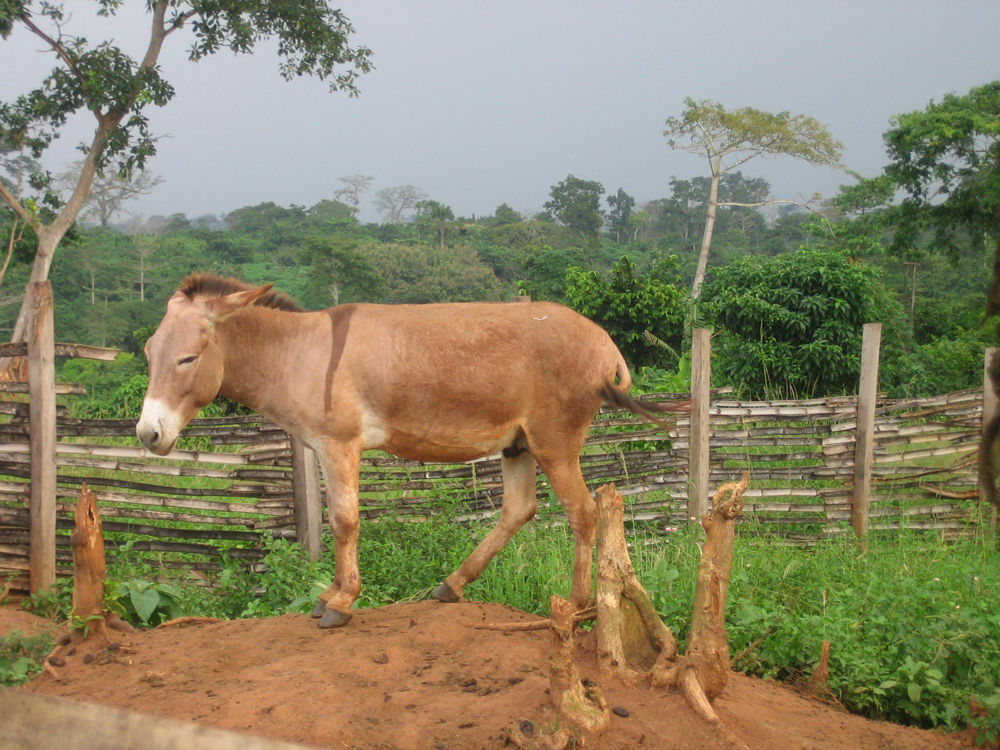
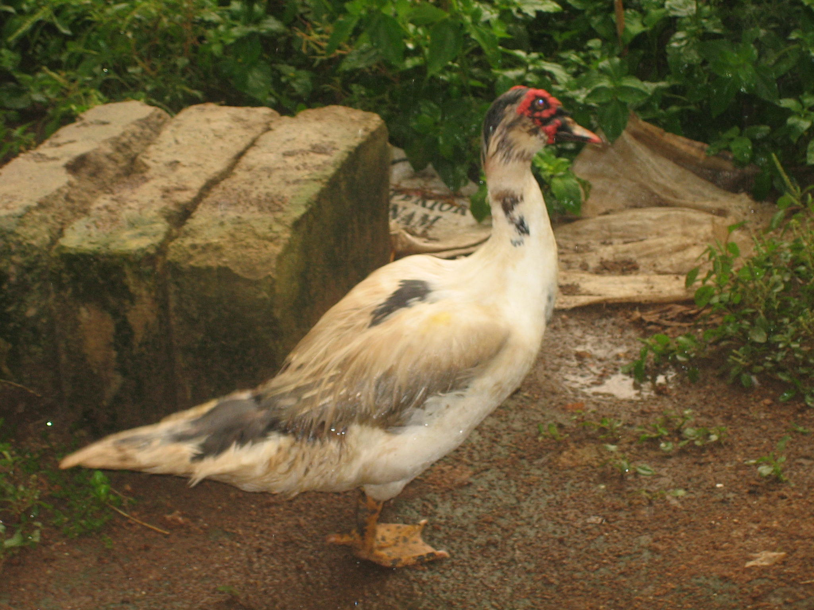
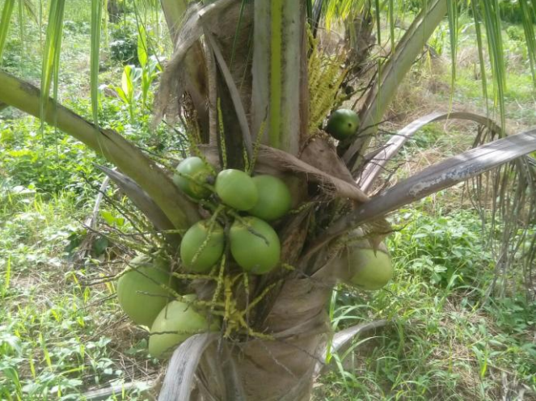
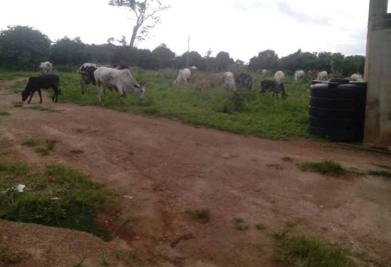
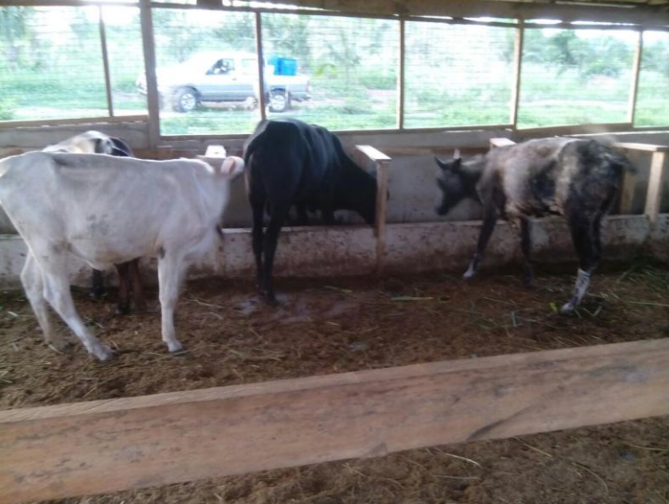

Technical Assistance

Skilled and experienced personnel envisaged in this project are not very common
in the area where the project is being developed. Equipment and other vital
inputs also have to be sourced from either Accra, the national capital or from
outside the country. In terms of technical assistance and knowhow, the Mampong
campus of the University of Education Winneba, which is about 30 km to the
north of the project, provides technical guidance in project implementation under
the directorship of Prof Annor within the context of the EDULINK project.
In spite of the challenges, the stakeholders including Embik, are passionate and
committed enough to see the project through. Pioneers, it is said, are those often
with arrows in their backs. They go through all kinds of challenges but triumph at
last. Embik Farms have had their share of challenges and problems as outlined
above but things seem to be falling in place for the success of the project. In this
connection no assistance, technical, equipment or otherwise is considered small
enough to be rejected. For further information please contact the Director of
Embik Farms Mr. Seidu Chibsah, by email sk@embik.com.
Review of Farm Activities

The calamities on the farm necessitated a careful review of farm activities for
sustainability. Taking into account soil fertility, topography and the frequency of
rainstorm on one hand and on the other hand the performance of the existing
citrus plantation and the cattle ranch in spite of the comparatively minimum
investment made in these activities, it was decided to put emphasis on tree crops
and cattle. The tree crops would help check the acute problem of soil erosion and
serve as wind breaker. The cattle on the other hand would introduce new
profession in the area and improve the local supply of meat and milk on the
market.
With respect to tree crops, management decided on coconut plantation on
account of its current market potential, the possibility of planting cover crop
underneath the coconut trees to serve as pasture for the cattle in addition to
checking soil erosion. With respect to cattle breeding, management planned to
put more emphasis on milk production which is currently in high demand by
manufacturers of yoghurt and provide meat as well. Having brought on board
these two activities, training was relegated to the position where it would be
offered only on demand.
Coconut Plantation

In 2012 the management started planting 850 coconut trees some of which have
started bearing fruits as anticipated and shown in Picture 5 below. At this rate it is certain to start full commercial harvest in 2017 as planned and
provide some financial relief for better farm operations.
Livestock Project
The cattle project is planned to be implemented in 3 phases with a shift of
emphasis from beef to milk production including milk processing.
Phase 1 of the project consists of modifying the existing structures so as to create
two separate sections: breeding and milk production sections. The breeding
section is housed in the existing kraal after renovation to meet planned objective.
Local cows when on heat will be isolated within the kraal in a section created
purposely for that and artificially inseminated with Friesian semen to obtain
crossbred calves. Male calves will be left at the breeding section to be fattened. It
is planned to procure ten oxen every six months to be fattened for the market.
The breeding section will be maintained on free grazing with some feed
supplementation.

The concept of zero grazing has necessitated pasture development on the farm
covering a total of about 8 acres to be managed in a manner that in combination
with feed supplementation and irrigation, there will be grass on the farm all year
round. Three different kinds of grass are available for propagation to provide
variety and improve nutritional content of feed.
The dairy section is already operational with 3 crossbred cows and 1 crossbred
bull (Friesian/local Sanga) purchased from Amrahia Dairy Farm. This is a state
institution setup to assist farmers in this respect. The 4 animals presently on the
farm are a small part of a planned target of between 16 to 20 animals for the
dairy section in Phase 1.
Management intends to procure pure Jersey breed brought in from South Africa
to cross the Friesian crossbreeds to improve milk yield. The products of
Jersey/Friesian crosses have been recorded to yield 20 litres of milk per day as
compared to the average yield of 15 litres from the Friesian/Sanga crossbreed.
The picture below shows the dairy cows on zero grazing in their kraal.

Phase 2 of the project will consist of expanding the dairy section with the aim of
producing enough milk on the farm to make it economically worthwhile to engage
in milk processing. Phase 3 will consist of organising a suitable location on the
farm for installation of the necessary machinery and training of personnel
required for the milk processing plant.
As usual, the management will undertake feasibility studies to test the viability,
profitability and sustainability of the second and third phases before
implementation. Pre–investment estimates indicate that the three phases will
cost about USD 400,000 at January 2014 prices over a period of about 10 years
(2014–2023). Phase 1 is planned to cost GHc 200,000 as at 2014 prices.
Management was able to raise partial funding in the last quarter of 2014 to start
implementation of Phase 1. Additional funding is urgently required to complete
phase1 of the project.